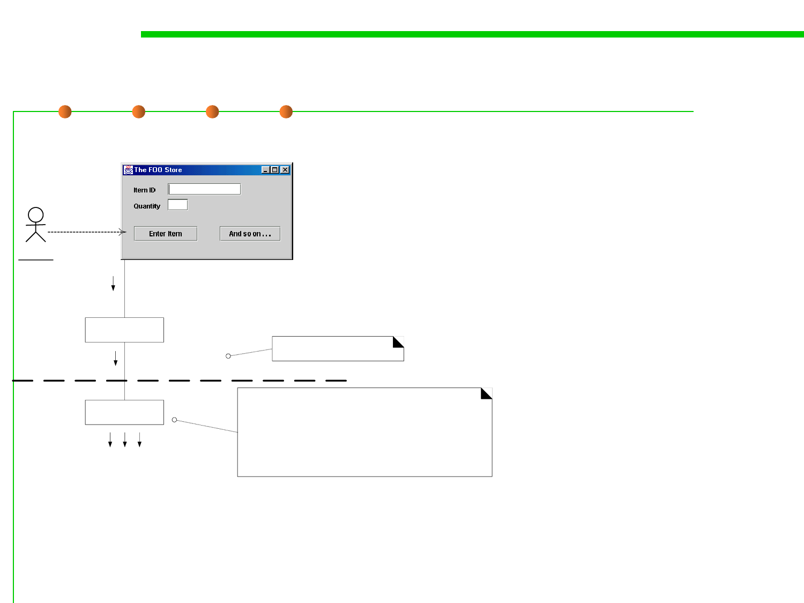

6.1 Metrics and Construction Principles for Maintainability
Example of Controller pattern
▪ Who should be the controller for system events ?
The Controller pattern suggest :
presses button
•Solution1: A Facade controller
: Cashier
actionPerformed( actionEvent )
•Register
•POSSystem
UI Layer
:SaleJFrame
enterItem(itemID, qty)?
system operation message
•Solution2: A receiver or
handler of all system events of
a use case scenario
Domain
Layer
: ???
Which class of object should be responsible for receiving this
system event message?
It is sometimes called the controller or coordinator. It does not
normally do the work, but delegates it to other objects.
•ProcessSaleHandler
•ProcessSaleSession
The controller is a kind of "facade" onto the domain layer from
the interface layer.
哪个对象的类应该负责接收系统事件消息？
有时称为控制器或者协调器，它通常不完成工作
，而是将工作委派给其他对象。（委托模式）
该控制器是从界面层到领域层的一种“外观”